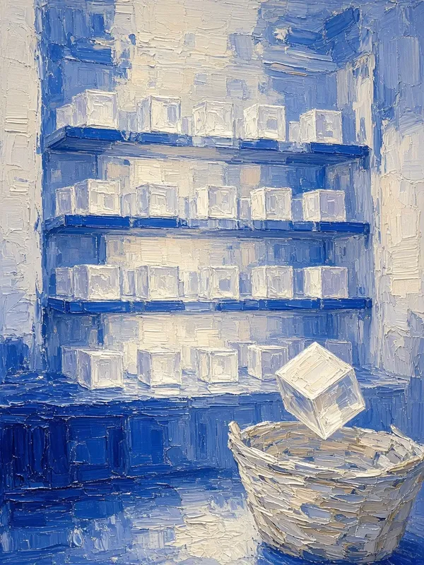

Hi, I'm Bill.
Product design leader. I turn dense technical data into software people can actually read.

Intercloud MarketplaceCisco's B2B storefront for cloud appsLead Product Designer, 6 months
View case study→Featured case studyNetwork Assurance EngineEnterprise visualization & proactive network monitoringTeams could discover, configure and buy cloud apps without leaving the storefront.
Lead Product Designer, 6 months
View case study→Nexus Dashboard Data BrokerCisco's traffic routing tool for network operatorsA patented timeline lets operators go back to the exact moment a change broke something.
Lead Product Designer, 2.5 months
View case study→Operators could see, set up and troubleshoot data flows in one place.